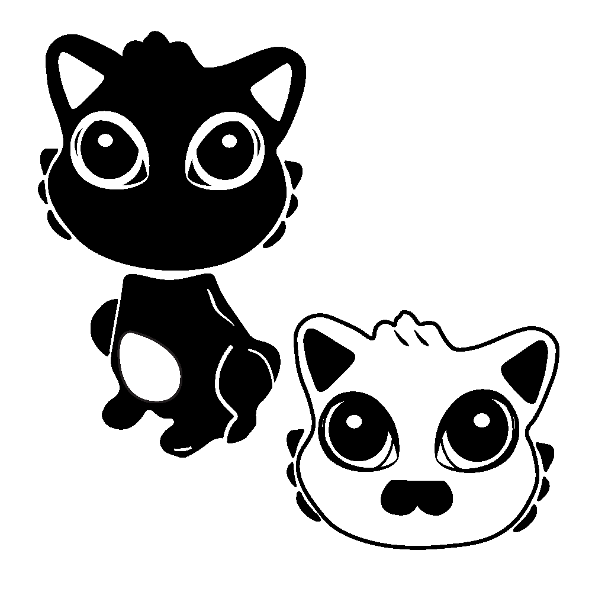

I took a class on Visual Communications in Human-Centered Design, where we learned the values of graphic design as aspiring engineers. One of our projects was to create two tote bag designs for a fictional toy company, and we were required to use Adobe Illustrator to draw a Kinder Egg toy with the company's slogan.
One of the constraints for the assignment was that we had to incorporate two different graphics of the toy: one that focuses on the entire figure and another that focuses on a detail. My assigned figurine's predominant features were its eyes, so I decided to incorporate it into the final version of both my graphics.
